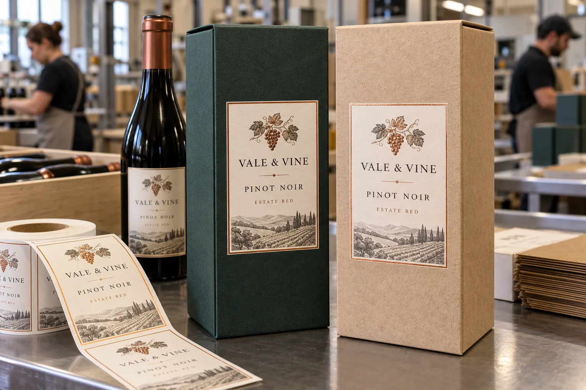
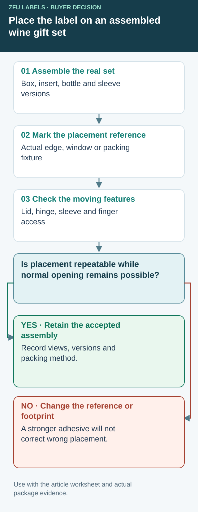

Approve a placement reference on the assembled gift set
A flat board sample can help compare appearance and adhesion, but it does not define where staff should place a label on a closed wine gift box. Establish the placement reference with the intended insert, bottle and sleeve assembled. Otherwise a centered label in the drawing can become off-center relative to the lid, window or visible bottle when the package is built.

Use this review sheet for each assembled configuration. Fill in dimensions from the actual pack rather than taking a margin from another gift box.
| Assembly feature | What to mark on the sample | What the packer confirms |
|---|---|---|
| Reading face | Intended display orientation and front | Agreed pack orientation at application |
| Placement reference | Actual edge, corner, window or fixture datum | A repeatable reference on the real box |
| Moving parts | Lid, hinge, sleeve travel and finger access | Normal opening sequence remains possible |
| Structural variation | Board thickness, insert and assembled depth | Which variants the approval represents |
| Decoration | Artwork alignment to the visible box features | Acceptable appearance and review method |
| Handling | Packing contacts, dividers and shipping orientation | Relevant sample/handling evidence identified |
Decide what the label is intended to cross
A label spanning a lid joint can accidentally become the part the recipient must tear. Decide whether that behavior is intended before ordering. If the job is decorative identification, keep normal opening independent where possible. If a seal is intended, obtain a separate functional brief and evidence; a handsome joint-spanning label does not establish tamper performance.
In a hypothetical two-bottle gift set, the same outer design is used with two insert depths. A placement jig referencing the lid edge may remain suitable while a wrap length or sleeve relationship changes. Check both assembled versions. Do not transfer approval just because their flat front-panel dimensions match, and do not create a second label SKU until the actual exception requires it.
Make the sample reproducible in packing
Photograph the accepted closed view, the side view and the package through its normal opening sequence. Identify the box version and label revision. Have the packing team demonstrate the proposed reference on several representative assemblies, with an agreed way to judge variation. A single carefully hand-positioned hero sample is insufficient evidence for a different production method.
When placement is unstable, first ask whether a clearer reference, fixture or revised footprint addresses it. A stronger adhesive will not correct a label consistently positioned against the wrong edge. Keep board bonding questions in the recycled-board guide; use the belly-band guide if the actual component is a strip that wraps and fastens to itself. This sheet owns the assembled set's placement and opening decision.
The box has a different surface from the bottle
A winery sometimes asks me to reuse its bottle artwork on a gift carton. The family resemblance is useful, but the construction should not be copied blindly. Glass is smooth and rigid; a paperboard box may have a matte coating, embossed texture or exposed fibers. Those details change how much adhesive actually contacts the surface.
HERMA's carton-label discussion notes that rough recycled board can lift label edges and may need a construction matched to that surface. UPM's paper-label overview shows the available range of smooth and textured faces. Neither source tells us that a specific face or adhesive will work on a particular wine box without a trial.
Two boxes, one visual identity
Imagine a composite winery offering a matte coated green box for its red wine and a natural paperboard box for a seasonal gift. The same illustration, grape mark and type can connect the two. I would still sample the label on both box surfaces. A stock that looks excellent on the matte board may leave obvious raised corners on the rougher board.
If the box will be assembled and packed by hand, align the label to a repeatable panel edge rather than relying on a worker's eye. If a fulfillment partner applies it, ask for its jig, direction and acceptable skew. The premium effect is easily lost when five boxes on a shelf show five different label heights.
Keep decoration away from the opening path
Start with a flat front panel and preserve clearance from folds, lid seams and finger notches. A label that crosses the opening can become a seal; that is a different job and should be specified deliberately. For a decorative front label, test rubbing during boxing, stacking and shipment. A high-gloss foil detail can be attractive, but it is not a substitute for adhesion and placement accuracy.
| Approval item | Evidence to collect |
|---|---|
| Board | Coating, texture and real box sample |
| Panel | Flat area and fold clearance |
| Finish | Print, foil or embossing proof at size |
| Application | Jig, speed and skew tolerance |
| Handling | Scuff and corner lift after packing |
Our buying view
Make the gift feel intentional, not merely expensive
I would choose a modest label that sits perfectly on both finished boxes over a larger embellished label that lifts at one corner. Consistency is part of the premium experience, and it starts with the actual board sample.
What to send with the request
- Finished boxes from each paperboard and coating supplier.
- Flat panel dimensions, fold map and opening direction.
- Artwork for every wine and gift variant.
- Assembly method, quantity and shipping route.
Compare embossing and foil for wine labels for finish decisions, and labels on paperboard cartons for rough-surface testing.
Frequently asked questions
Can the bottle label stock be used on the box?
Possibly, but glass and coated or textured board present different surfaces. Approve the box label on the finished carton.
Should a label cross a gift box fold?
A flat front panel is the safer starting point. A fold or lid seam requires a separate fit and opening trial.
Is hot foil necessary for a premium look?
No. Paper texture, restrained ink and accurate placement may carry the presentation; compare finish cost and scuff behavior on real packed boxes.
Related buyer guides
Continue with Bag-in-Box Wine Labels: Leave Room for the Tap and Folds for a focused purchase checklist.
Send the unresolved specification question
Include assembled box and insert versions, opening sequence, intended label reference, application method, artwork and quantities.
Prepare a label specification inquiry. The contact form opens an email draft; review it and use the listed email or WhatsApp route for attachments. Available construction, sample scope, pricing and timing require confirmation for the actual job.